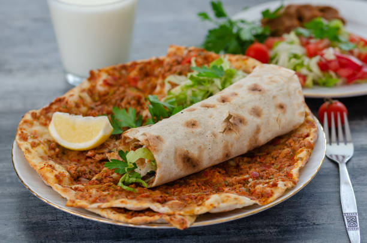

Lahmacun

What's Lahmacun?
Lahmacun is a popular Turkish dish often referred to as “Turkish pizza.”
It consists of a thin, crispy dough topped with a flavorful mixture of
ground meat, tomatoes, onions, and fresh herbs. It is typically served
with fresh greens and a squeeze of lemon, then rolled up and eaten by hand.
Ingredients
- 2 pieces of thin flatbread (or homemade dough)
- 200g ground lamb or beef
- 1 onion, finely chopped
- 2 tomatoes, finely chopped
- 1/2 bunch parsley, finely chopped
- 1 tablespoon tomato paste
- 1 tablespoon olive oil
- Salt, to taste
- Black pepper, to taste
- Optional: chili flakes or paprika
Cooking Steps
- Preheat the oven to a high temperature (around 220°C / 425°F).
- In a bowl, mix the ground meat, onion, tomatoes, parsley, and tomato paste.
- Add olive oil, salt, pepper, and optional spices, then mix well.
- Spread the mixture thinly over the flatbread.
- Place the prepared lahmacun on a baking tray.
- Bake for 8–10 minutes until the edges are crispy and the topping is cooked.
- Remove from the oven and let it cool slightly.
- Serve with fresh greens, lemon slices, and roll before eating.
Home